Survivants
Clique sur un survivant pour voir sa présentation et ses perks.
Dwight Fairfield
Leader hésitant, prêt à tout pour garder son groupe en vie.
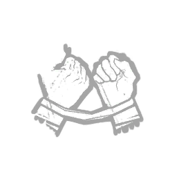
Bond
Voit l'aura des survivants proches.
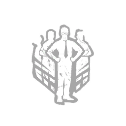
Prove Thyself
Répare plus vite quand d'autres survivants sont proches.
Leader
Les survivants proches agissent plus vite.
Histoire
- Nationalité
- Américain
- Métier
- Employé de bureau
- Chapitre
- Jeu de base (2016)
Dwight était un employé timide, souvent mis de côté par ses collègues. Lors d'une sortie d'entreprise en forêt, ils l'ont laissé seul après une soirée trop arrosée. Perdu dans les bois, il a été englouti par un brouillard noir. Dans le monde de l'Entité, il a découvert qu'il pouvait devenir un vrai leader.
Meg Thomas
Sportive énergique qui compte sur ses jambes pour s'en sortir.
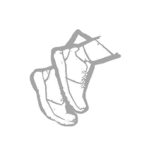
Sprint Burst
Sprint au début d'une course, puis épuisement.
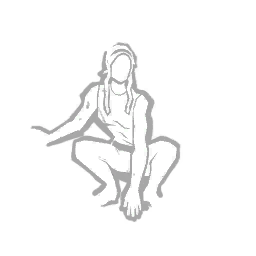
Quick & Quiet
Sauts et entrées de casier rapides sans bruit.
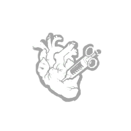
Adrenaline
Soin et sprint quand les portes sont alimentées.
Histoire
- Nationalité
- Américaine
- Métier
- Athlète
- Chapitre
- Jeu de base (2016)
Meg a grandi auprès d'une mère malade et a trouvé dans la course à pied un moyen d'évacuer sa colère. Elle courait chaque jour sur les sentiers forestiers près de chez elle. Un matin, elle est partie courir et n'est jamais revenue.
Claudette Morel
Botaniste discrète qui sait soigner avec ce que la nature offre.
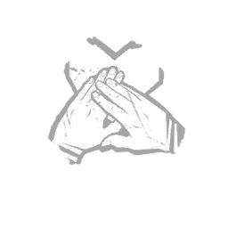
Empathy
Voit l'aura des survivants blessés ou à terre.
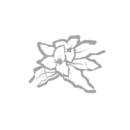
Botany Knowledge
Soigne plus vite.
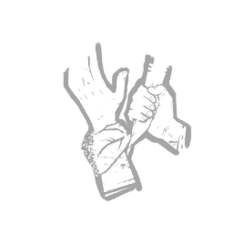
Self-Care
Se soigne seule sans trousse de soins.
Histoire
- Nationalité
- Canadienne
- Métier
- Botaniste
- Chapitre
- Jeu de base (2016)
Passionnée de plantes depuis l'enfance, Claudette étudiait la botanique et préférait la nature à la foule. Timide, elle se sentait souvent à part. Un soir, elle a disparu dans le brouillard sans laisser de trace.
Jake Park
Solitaire qui a tourné le dos à une vie toute tracée.
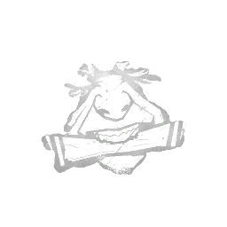
Iron Will
Réduit les gémissements de douleur.
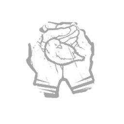
Calm Spirit
Moins de chances d'alerter les corbeaux, ne crie plus.
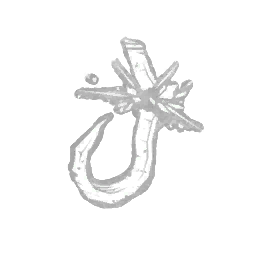
Saboteur
Sabote les crochets sans boîte à outils.
Histoire
- Nationalité
- Origine sud-coréenne
- Métier
- Survivaliste
- Chapitre
- Jeu de base (2016)
Fils d'une famille aisée, Jake a refusé l'avenir que son père avait prévu pour lui. Il est parti vivre seul dans la nature, loin de tout. Un jour, il s'est enfoncé dans les bois et n'a plus jamais donné de nouvelles.
Nea Karlsson
Graffeuse rebelle, à l'aise dans les rues de nuit.
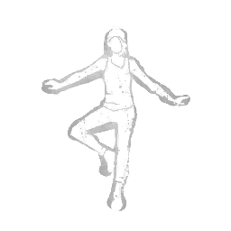
Balanced Landing
Moins sonnée après une chute, sprint en atterrissant.
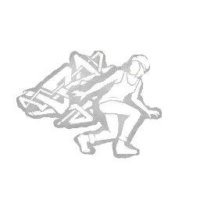
Urban Evasion
Se déplace plus vite accroupie.
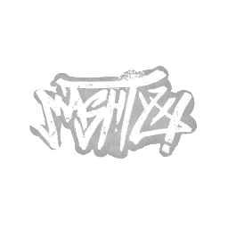
Streetwise
Ses objets et ceux des alliés proches s'usent moins.
Histoire
- Nationalité
- Suédoise
- Métier
- Artiste de rue
- Chapitre
- Jeu de base (2016)
Née en Suède puis installée aux États-Unis, Nea ne s'est jamais sentie à sa place. Elle s'est exprimée à travers le graffiti, peignant la nuit sur les murs de la ville. Une nuit, en peignant dans un lieu abandonné, elle a disparu.
Laurie Strode
Survivante d'Halloween, toujours traquée par Michael Myers.
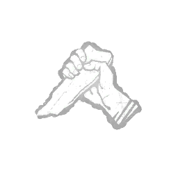
Decisive Strike
S'échappe de la prise du tueur après un décrochage.
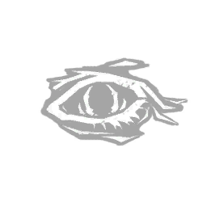
Object of Obsession
Partage de lecture d'aura avec le tueur.
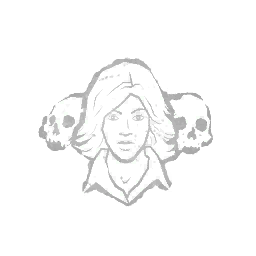
Sole Survivor
Son aura est cachée quand les autres sont morts.
Histoire
- Nationalité
- Américaine
- Métier
- Lycéenne
- Chapitre
- The Halloween Chapter (2016)
Le soir d'Halloween, à Haddonfield, Laurie a été prise pour cible par Michael Myers alors qu'elle gardait des enfants. Elle a survécu à cette nuit, mais son tueur ne l'a jamais lâchée. Elle s'est retrouvée dans le monde de l'Entité, où il continue de la poursuivre.
Ace Visconti
Joueur chanceux qui mise tout sur son charme.
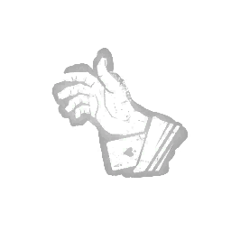
Ace in the Hole
Trouve de meilleurs accessoires dans les coffres.
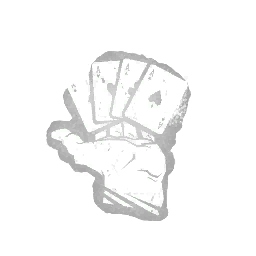
Open-Handed
Augmente la portée de lecture d'aura de tous.
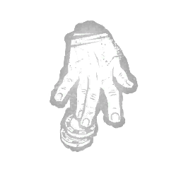
Up the Ante
Augmente la chance des autres survivants.
Histoire
- Nationalité
- Argentin d'origine italienne
- Métier
- Joueur
- Chapitre
- Of Flesh and Mud (2016)
Ace a toujours vécu de la chance et des jeux d'argent, enchaînant gains et dettes. À force de parier, il a fini par devoir de l'argent à des gens dangereux. Après une nuit de trop, il a disparu sans laisser de trace.
William « Bill » Overbeck
Vétéran endurci qui protège les plus jeunes.
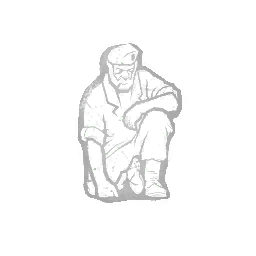
Left Behind
Voit l'aura de la trappe quand il est le dernier.
Borrowed Time
Protège le survivant qu'il vient de décrocher.
Unbreakable
Se relève seul une fois par partie.
Histoire
- Nationalité
- Américain
- Métier
- Vétéran du Vietnam
- Chapitre
- Left 4 Dead (2016)
Ancien soldat, Bill a survécu à l'épidémie qui a transformé la population en infectés. Pour sauver ses compagnons, il s'est sacrifié lors d'un dernier combat. Au lieu de mourir, il s'est réveillé dans le monde de l'Entité.
Feng Min
Championne de jeux vidéo, rapide et ultra concentrée.
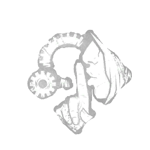
Technician
Réparations plus silencieuses, pas d'explosion en cas d'échec.
Lithe
Sprint après avoir sauté une fenêtre.
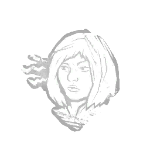
Alert
Voit l'aura du tueur quand il casse quelque chose.
Histoire
- Nationalité
- Chinoise
- Métier
- Joueuse professionnelle
- Chapitre
- Spark of Madness (2017)
Feng Min est devenue une star de l'e-sport en Chine. Sous la pression, elle a perdu confiance en elle et ses résultats ont chuté. Après une défaite, elle a erré seule dans la ville et s'est perdue dans un brouillard.
David King
Bagarreur de Manchester qui n'a jamais reculé devant un combat.
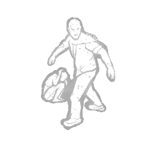
We're Gonna Live Forever
Plus de points, soins plus rapides sur les survivants à terre.
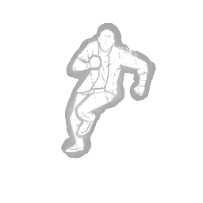
Dead Hard
Encaisse un coup grâce à une esquive.
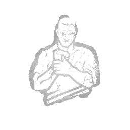
No Mither
Toujours blessé, mais sans traces de sang.
Histoire
- Nationalité
- Anglais
- Métier
- Bagarreur
- Chapitre
- A Lullaby for the Dark (2017)
Fils d'une famille riche, David préférait le rugby et les bagarres aux privilèges de ses parents. Il passait ses nuits dans des combats clandestins. Après l'un d'eux, il a disparu dans le brouillard.
Quentin Smith
Lycéen épuisé qui lutte contre le sommeil.
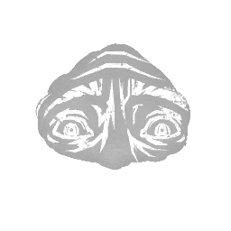
Wake Up!
Voit l'aura des portes et les ouvre plus vite.
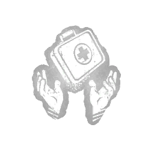
Pharmacy
Fouille les coffres plus vite, obtient une trousse de soins.
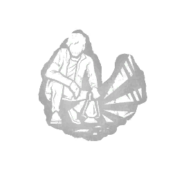
Vigil
Récupère plus vite des effets négatifs.
Histoire
- Nationalité
- Américain
- Métier
- Lycéen
- Chapitre
- A Nightmare on Elm Street (2017)
Quentin est hanté par Freddy Krueger, qui s'en prend à lui dans ses rêves. Pour lui échapper, il a tenté de ne plus dormir. Épuisé, il a fini par s'endormir et s'est réveillé dans le monde de l'Entité.
David Tapp
Inspecteur obsédé par l'enquête sur le tueur au Puzzle.
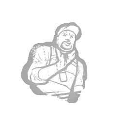
Tenacity
Rampe plus vite et se relève en rampant.
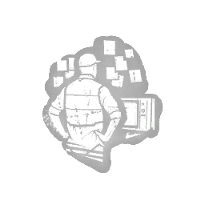
Detective's Hunch
Voit les générateurs, coffres et totems après un générateur réparé.
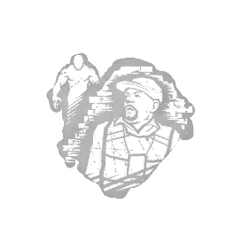
Stake Out
Gagne des jetons qui transforment les tests en tests parfaits.
Histoire
- Nationalité
- Américain
- Métier
- Inspecteur de police
- Chapitre
- Saw (2018)
L'inspecteur Tapp a consacré sa vie à traquer Jigsaw, le tueur au Puzzle. Son obsession lui a coûté son équipier, sa carrière et sa santé. Toujours à la poursuite de la vérité, il s'est retrouvé dans le monde de l'Entité.
Kate Denson
Chanteuse pleine d'espoir, sa guitare toujours à la main.
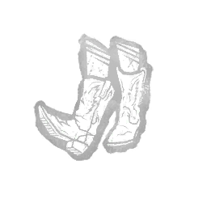
Dance With Me
Ne laisse pas de traces après un saut ou un casier.
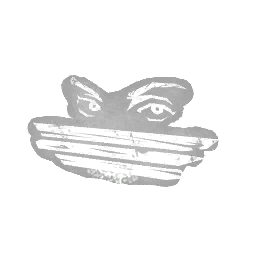
Windows of Opportunity
Voit l'aura des palettes et des fenêtres.
Boil Over
Plus difficile à porter pour le tueur.
Histoire
- Nationalité
- Américaine
- Métier
- Chanteuse
- Chapitre
- Curtain Call (2018)
Kate parcourait le pays pour chanter et apporter un peu de joie autour d'elle. Un jour, alors qu'elle jouait dans un coin de forêt isolé près de chez elle, des membres vivants sortis des arbres l'ont saisie. Il ne restait d'elle que sa guitare.
Adam Francis
Professeur débrouillard qui apprend de chaque erreur.
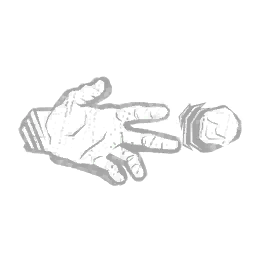
Diversion
Lance un caillou pour distraire le tueur.
Deliverance
Se décroche seul après avoir sauvé quelqu'un.
Autodidact
Les tests réussis en soignant accélèrent les soins.
Histoire
- Nationalité
- Jamaïcain
- Métier
- Professeur
- Chapitre
- Shattered Bloodline (2018)
Adam a grandi en Jamaïque et a fait de l'éducation sa vocation. Devenu professeur, il voulait transmettre le goût d'apprendre. Il a disparu dans des circonstances mystérieuses, avalé par le brouillard.
Jeff Johansen
Artiste discret, fan de métal et de peinture.
Breakdown
Le crochet casse après son décrochage, il voit le tueur.
Aftercare
Voit l'aura des survivants qu'il a aidés.
Distortion
Cache son aura au tueur.
Histoire
- Nationalité
- Canadien d'origine norvégienne
- Métier
- Artiste
- Chapitre
- Darkness Among Us (2018)
Fils unique et réservé, Jeff a grandi à Ormond et s'est réfugié dans le heavy metal et la peinture. Devenu artiste et designer, il est retourné à Ormond après la mort de son père pour régler ses affaires. Il y a disparu, laissant derrière lui le chien dont il s'occupait.
Jane Romero
Star de la télé, sûre d'elle et pleine de ressources.
Solidarity
Se soigne en soignant les autres.
Poised
Pas de traces après avoir terminé un générateur.
Head On
Étourdit le tueur en sortant d'un casier.
Histoire
- Nationalité
- Américaine
- Métier
- Animatrice de talk-show
- Chapitre
- Demise of the Faithful (2018)
Jane est devenue célèbre grâce à son émission de télévision. Derrière son assurance, elle cachait un besoin constant de prouver sa valeur. Elle a disparu sans laisser de trace, emportée par le brouillard.
Ash Williams
Tueur de démons à la grande gueule.
Mettle of Man
Encaisse un coup après plusieurs coups de protection.
Flip-Flop
Récupérer à terre remplit aussi la barre pour se dégager.
Buckle Up
Voit le niveau de récupération des survivants à terre.
Histoire
- Nationalité
- Américain
- Métier
- Chasseur de démons
- Chapitre
- Ash vs Evil Dead (2019)
Simple vendeur, Ash a libéré des démons en lisant le Necronomicon dans une cabane au fond des bois. Depuis, il les combat avec sa tronçonneuse et son fusil. Sa route l'a mené jusqu'au monde de l'Entité.
Nancy Wheeler
Lycéenne courageuse, prête à tout pour découvrir la vérité.
Better Together
Montre à tous le générateur qu'elle répare.
Fixated
Marche plus vite et voit ses propres traces.
Inner Strength
Se soigne dans un casier après avoir détruit un totem.
Histoire
- Nationalité
- Américaine
- Métier
- Lycéenne
- Chapitre
- Stranger Things (2019)
À Hawkins, la meilleure amie de Nancy a disparu dans d'étranges circonstances. En enquêtant, Nancy a découvert le Monde à l'envers et ses créatures. Elle s'est retrouvée piégée dans le monde de l'Entité.
Steve Harrington
Ancien populaire devenu protecteur de ses amis.
Babysitter
Le survivant décroché ne laisse pas de traces.
Camaraderie
Met le crochet en pause quand un allié est proche.
Second Wind
Se soigne seul après avoir soigné un autre.
Histoire
- Nationalité
- Américain
- Métier
- Lycéen
- Chapitre
- Stranger Things (2019)
Steve était le garçon le plus populaire du lycée de Hawkins. Face aux créatures du Monde à l'envers, il est devenu le protecteur de son groupe d'amis. Il a fini lui aussi dans le monde de l'Entité.
Yui Kimura
Pilote de rue intrépide qui ne lâche jamais rien.
Lucky Break
Blessée, ne laisse pas de sang pendant un temps.
Any Means Necessary
Relève une palette tombée.
Breakout
Aide un survivant porté à se dégager.
Histoire
- Nationalité
- Japonaise
- Métier
- Pilote de course de rue
- Chapitre
- Cursed Legacy (2019)
Yui a grandi en se battant pour sa place et a formé un gang de pilotes de rue à Tokyo. Elle vivait pour la vitesse et le danger. Lors d'une course de nuit, elle a disparu dans le brouillard.
Zarina Kassir
Documentariste qui veut révéler la vérité au monde.
Off the Record
Après un décrochage, son aura est cachée et elle encaisse un coup.
Red Herring
Fait croire au tueur qu'elle est dans un casier.
For the People
Soigne entièrement un allié sans trousse, mais se blesse.
Histoire
- Nationalité
- Libano-américaine
- Métier
- Documentariste
- Chapitre
- Chains of Hate (2020)
Zarina réalisait des documentaires pour dénoncer les injustices. Son enquête sur une ancienne prison et ses horreurs l'a menée dans des lieux de plus en plus sombres. C'est là qu'elle a disparu.
Cheryl Mason
Jeune femme marquée par le passé de Silent Hill.
Soul Guard
Protégée après s'être relevée, se relève malgré un maléfice.
Blood Pact
Lien avec l'Obsession, vitesse en se soignant.
Repressed Alliance
Bloque un générateur pendant un temps.
Histoire
- Nationalité
- Américaine
- Métier
- Lycéenne
- Chapitre
- Silent Hill (2020)
Cheryl, aussi appelée Heather, a été liée dès sa naissance à la ville de Silent Hill et à son culte. Elle a affronté les cauchemars de la ville pour se libérer de son destin. Ce combat l'a menée jusqu'au monde de l'Entité.
Felix Richter
Architecte visionnaire, toujours un plan en tête.
Visionary
Voit l'aura des générateurs.
Desperate Measures
Soigne et décroche plus vite selon le nombre de blessés.
Built to Last
Recharge son objet dans un casier.
Histoire
- Nationalité
- Allemand
- Métier
- Architecte
- Chapitre
- Descend Beyond (2020)
Felix était un architecte talentueux, élevé dans la pression d'une famille exigeante. Il a voulu concevoir un projet hors du commun. Ce projet l'a conduit vers des forces qu'il ne comprenait pas, et il a disparu.

Élodie Rakoto
Enquêtrice de l'occulte, curieuse et méthodique.
Appraisal
Fouille les coffres plus vite, même déjà ouverts.
Deception
Fait croire au tueur qu'elle est entrée dans un casier.
Power Struggle
Fait tomber une palette quand elle est portée.
Histoire
- Nationalité
- Française d'origine malgache
- Métier
- Enquêtrice de l'occulte
- Chapitre
- A Binding of Kin (2020)
Élodie enquêtait sur les phénomènes surnaturels et les objets maudits. Ses recherches l'ont menée sur la piste de disparitions inexpliquées. En suivant cette piste, elle a elle-même disparu.
Lee Yun-jin
Productrice ambitieuse dans l'industrie de la K-pop.
Fast Track
Gagne des jetons pour accélérer un générateur.
Smash Hit
Sprint après avoir étourdi le tueur avec une palette.
Self-Preservation
Ne laisse pas de traces quand un allié est frappé près d'elle.
Histoire
- Nationalité
- Sud-coréenne
- Métier
- Productrice de musique
- Chapitre
- All-Kill (2021)
Yun-jin s'est battue pour se faire une place dans le monde impitoyable de la K-pop. Elle a produit les succès d'une star montante, Ji-Woon. En découvrant sa vraie nature, elle est devenue sa cible et s'est retrouvée dans le monde de l'Entité.
Jill Valentine
Membre des S.T.A.R.S., experte en survie.
Counterforce
Détruit les totems plus vite, voit le plus éloigné.
Resurgence
Se soigne en partie après avoir été décrochée.
Blast Mine
Piège un générateur pour aveugler le tueur.
Histoire
- Nationalité
- Américaine
- Métier
- Policière (S.T.A.R.S.)
- Chapitre
- Resident Evil (2021)
Jill faisait partie de l'unité d'élite S.T.A.R.S. de Raccoon City. Elle a survécu à l'épidémie de virus et à la traque de Nemesis. En fuyant la ville, elle s'est retrouvée dans le monde de l'Entité.
Leon Scott Kennedy
Jeune policier jeté en plein cauchemar dès son premier jour.
Bite the Bullet
Soigne en silence.
Flashbang
Fabrique une grenade aveuglante dans un casier.
Rookie Spirit
Voit les générateurs qui régressent.
Histoire
- Nationalité
- Américain
- Métier
- Policier
- Chapitre
- Resident Evil (2021)
Pour son premier jour de travail, Leon est arrivé à Raccoon City en pleine épidémie. Il a survécu aux zombies et aux créatures d'Umbrella. Cette nuit-là, il a basculé dans le monde de l'Entité.
Mikaela Reid
Jeune mystique passionnée par l'occulte.
Clairvoyance
Voit les éléments proches après avoir détruit un totem.
Boon: Circle of Healing
Totem qui permet de se soigner seul et plus vite.
Boon: Shadow Step
Totem qui cache les traces et l'aura des survivants.
Histoire
- Nationalité
- Américaine
- Métier
- Jeune mystique
- Chapitre
- Hour of the Witch (2021)
Mikaela adorait les histoires de sorcières et la magie. Lors d'un spectacle d'Halloween, elle a lu à voix haute une incantation ancienne. Un brouillard l'a alors emportée.
Jonah Vasquez
Génie des maths qui voit des schémas partout.
Overcome
Court plus longtemps après avoir été blessé.
Corrective Action
Transforme les tests ratés des alliés en tests réussis.
Boon: Exponential
Totem qui permet de se relever seul plus vite.
Histoire
- Nationalité
- Américain d'origine hispanique
- Métier
- Mathématicien (décrypteur pour la CIA)
- Chapitre
- Portrait of a Murder (2021)
Jonah était un mathématicien brillant, recruté par la CIA pour casser des codes. Une série de nombres mystérieux l'a obsédé jusqu'à l'épuisement. En suivant ce code, il a disparu dans le brouillard.
Yoichi Asakawa
Biologiste marin, calme et attentionné.
Parental Guidance
Pas de traces après que le tueur a été étourdi.
Empathic Connection
Les blessés voient son aura, soigne plus vite.
Boon: Dark Theory
Totem qui fait courir plus vite les survivants.
Histoire
- Nationalité
- Japonais
- Métier
- Biologiste marin
- Chapitre
- Sadako Rising (2022)
Yoichi étudiait les océans et vivait une vie tranquille. Une cassette vidéo maudite liée à Sadako est entrée dans sa vie. Après l'avoir regardée, il a été emporté dans le monde de l'Entité.
Haddie Kaur
Podcasteuse courageuse qui enquête sur le paranormal.
Inner Focus
Voit les traces des autres survivants.
Residual Manifest
Rend le tueur aveugle quand il est ébloui.
Overzealous
Répare plus vite après avoir détruit un totem.
Histoire
- Nationalité
- Canadienne d'origine indienne
- Métier
- Podcasteuse
- Chapitre
- Roots of Dread (2022)
Haddie animait un podcast sur les phénomènes paranormaux. Elle a enquêté sur une série de disparitions liées à une forêt maudite. Sur place, elle a été happée par le brouillard.
Ada Wong
Espionne mystérieuse aux intentions floues.
Low Profile
Dernière survivante, ne laisse ni bruit, ni sang, ni traces.
Reactive Healing
Se soigne en partie quand un allié est blessé près d'elle.
Wiretap
Pose un mouchard sur un générateur pour voir le tueur.
Histoire
- Nationalité
- Inconnue
- Métier
- Agent secret
- Chapitre
- Resident Evil: Project W (2022)
Ada Wong est une espionne dont le vrai nom reste un mystère. Elle a croisé la route de Leon à Raccoon City en poursuivant ses propres objectifs. Une mission l'a conduite tout droit dans le brouillard.
Rebecca Chambers
Médecin de terrain des S.T.A.R.S.
Better Than New
Les alliés soignés agissent plus vite.
Reassurance
Met en pause le crochet d'un allié.
Hyperfocus
Les tests parfaits enchaînés donnent des bonus.
Histoire
- Nationalité
- Américaine
- Métier
- Médecin (S.T.A.R.S.)
- Chapitre
- Resident Evil: Project W (2022)
Rebecca était la plus jeune recrue des S.T.A.R.S., spécialisée dans les soins. Elle a survécu au manoir Spencer et aux expériences d'Umbrella. Elle s'est ensuite retrouvée dans le monde de l'Entité.
Vittorio Toscano
Érudit italien venu du Moyen Âge.
Quick Gambit
Montre le générateur le plus proche pendant une poursuite.
Fogwise
Voit le tueur après un test de réparation parfait.
Potential Energy
Stocke des réparations pour les utiliser d'un coup.
Histoire
- Nationalité
- Italien
- Métier
- Érudit
- Chapitre
- Forged in Fog (2022)
Vittorio vivait au XIVe siècle et a consacré sa vie à l'étude et aux voyages. Ses recherches sur un artefact mystérieux l'ont mis sur la route d'un chevalier sans pitié. Il a été entraîné avec lui dans le monde de l'Entité.
Thalita Lyra
Combattante de cerf-volant, cœur de sa communauté.
Friendly Competition
Répare plus vite après un générateur fait à plusieurs.
Teamwork: Power of Two
Elle et l'allié soigné courent plus vite ensemble.
Cut Loose
Enchaîne des sauts silencieux.
Histoire
- Nationalité
- Brésilienne
- Métier
- Combattante de cerf-volant
- Chapitre
- Tools of Torment (2023)
Thalita a appris le combat de cerfs-volants avec son oncle et son petit frère Renato. Ses vidéos l'ont rendue célèbre, puis elle a ouvert une boutique à Rio, Fun Kites Rio. Après un tournoi, elle et Renato ont poursuivi un drone jusque dans une forêt, où un chasseur les a traqués.
Renato Lyra
Petit frère discret de Thalita, doué au cerf-volant.
Background Player
Sprint après qu'un allié a été attrapé.
Blood Rush
Se soigne en partie sur le dernier crochet.
Teamwork: Collective Stealth
Lui et l'allié décroché ne laissent pas de traces.
Histoire
- Nationalité
- Brésilien
- Métier
- Combattant de cerf-volant
- Chapitre
- Tools of Torment (2023)
Garçon doué mais solitaire, Renato a trouvé sa voie dans le combat de cerfs-volants et le bénévolat. Il a aidé sa sœur Thalita à faire de leur boutique un succès. Après un tournoi qui a mal tourné, tous les deux ont été entraînés dans une traque mortelle en forêt.
Gabriel Soma
Ingénieur débrouillard venu de l'espace.
Troubleshooter
Voit le générateur le plus avancé pendant une poursuite.
Made for This
Gagne de l'Endurance en soignant alors qu'il est blessé.
Scavenger
Recharge sa boîte à outils vide avec des tests parfaits.
Histoire
- Nationalité
- Né sur Proxima Centauri C
- Métier
- Ingénieur
- Chapitre
- End Transmission (2023)
Gabriel est un clone né sur Proxima Centauri C, élevé avec de faux souvenirs d'une famille sur Terre. Sur la planète Dvarka, un androïde défectueux a tué presque tout son équipage. Gabriel s'est échappé, mais la créature a continué à le traquer.
Nicolas Cage
Superstar d'Hollywood dans son propre rôle.
Dramaturgy
Sprint suivi d'un effet aléatoire.
Plot Twist
Tombe à terre en silence puis se relève plein de vie.
Scene Partner
Crie en voyant le tueur et voit son aura.
Histoire
- Nationalité
- Américain
- Métier
- Acteur
- Chapitre
- Nicolas Cage (2023)
Nicolas Cage a été attiré par un scénario intitulé Descend Beyond, qui semblait prendre le contrôle de ses sens. Il s'est rendu sur une île isolée du Pacifique pour tourner dans un temple souterrain. Pendant un rituel, un brouillard noir l'a enveloppé et toute l'équipe de tournage a disparu.
Ellen Louise Ripley
Officier du Nostromo, dernière survivante de son équipage.
Chemical Trap
Piège une palette pour ralentir le tueur.
Light-Footed
Court sans faire de bruit de pas.
Lucky Star
Cachée dans un casier, ne fait plus de bruit ni de sang.
Histoire
- Nationalité
- Américaine
- Métier
- Officier du Nostromo
- Chapitre
- Alien (2023)
Ripley était officier à bord du vaisseau Nostromo. Une créature extraterrestre a tué tout l'équipage, un par un. Elle a fait exploser le vaisseau et s'est échappée en navette, avant de se réveiller dans un nouveau cauchemar.
Alan Wake
Écrivain à succès prisonnier de ses propres histoires.
Champion of Light
Va plus vite en éclairant, ralentit le tueur ébloui.
Boon: Illumination
Totem qui montre les coffres et générateurs.
Deadline
Blessé, plus de tests mais moins de pénalités.
Histoire
- Nationalité
- Américain
- Métier
- Écrivain
- Chapitre
- Alan Wake (2024)
Alan Wake a disparu à Bright Falls et s'est retrouvé piégé dans la Dark Place, où ses histoires prennent vie. Il réécrit sans cesse un vieux scénario dans l'espoir de rentrer auprès de sa femme, Alice. Il a fini par apercevoir une lumière dans le brouillard et a marché vers elle.
Sable Ward
Passionnée d'occultisme qui embrasse les ténèbres.
Invocation: Weaving Spiders
Rituel dans la cave qui accélère les générateurs.
Strength in Shadows
Se soigne seule dans la cave.
Wicked
Voit le tueur après un décrochage.
Histoire
- Nationalité
- Américaine
- Métier
- Animatrice radio (occultisme)
- Chapitre
- All Things Wicked (2024)
Sable a grandi à Greenville comme une marginale fascinée par l'horreur et l'occulte. Sa meilleure amie était Mikaela. Quand Mikaela a disparu, Sable a découvert un passage secret sous le théâtre de la ville et y est descendue seule pour la retrouver.
Aestri Yazar & Baermar Uraz
Duo de bardes venus du monde de Donjons & Dragons.
Bardic Inspiration
Joue de la musique pour aider les tests des alliés.
Mirrored Illusion
Crée une illusion sur un objet de la carte.
Still Sight
Immobile, voit le tueur, les coffres et générateurs.
Histoire
- Nationalité
- Oerth (Aestri est une elfe, Baermar un humain)
- Métier
- Bardes
- Chapitre
- Dungeons & Dragons (2024)
Aestri et Baermar voyagent jusqu'à Greyhawk, où une nouvelle magie efface le mal du monde. Craignant un monde sans histoires à raconter, ils remontent jusqu'à la tour de l'archiliche Vecna. Baermar y chante une incantation tirée d'un parchemin, et un brouillard noir emporte le groupe.
Lara Croft
Archéologue aventurière, endurcie par l'expérience.
Finesse
Sauts rapides plus rapides quand elle est en pleine santé.
Hardened
Ses cris révèlent le tueur au lieu de la trahir.
Specialist
Les coffres donnent des jetons pour accélérer un générateur.
Histoire
- Nationalité
- Anglaise
- Métier
- Archéologue
- Chapitre
- Tomb Raider (2024)
Lara a appris très jeune à se débrouiller seule. Lors d'une expédition sur l'île de Yamatai avec son amie Sam, une tempête a détruit leur navire. Capturée en tentant de sauver Sam, elle a été jetée dans une rivière mystérieuse et en est ressortie dans un nouveau cauchemar.
Trevor Christopher Belmont
Chasseur de vampires, héritier d'une lignée crainte.
Eyes of Belmont
Voit le tueur à chaque générateur terminé.
Exultation
Étourdir le tueur recharge et améliore son objet.
Moment of Glory
Se soigne seul après un délai une fois blessé.
Histoire
- Nationalité
- Valaque (Roumanie)
- Métier
- Chasseur de vampires
- Chapitre
- Castlevania (2024)
En 1476, Trevor a vaincu Dracula avec le fouet de sa famille et gagné le titre de Tueur de vampires. Des années plus tard, il a senti une autre ténèbre, plus froide. En rentrant chez lui, il a trouvé son village désert sous un brouillard noir, et son fouet avait disparu.
Taurie Cain
Disciple d'un culte secret qui a choisi de désobéir.
Invocation: Treacherous Crows
Rituel dans la cave : effrayer les corbeaux révèle des survivants.
Clean Break
Se soigne seule après un délai une fois soignée.
Shoulder the Burden
Prend un stade de crochet à la place d'un allié.
Histoire
- Nationalité
- Écossaise
- Métier
- Disciple de la Serre Noire
- Chapitre
- Doomed Course (2024)
Taurie a été élevée au sein des Disciples de la Serre Noire, un culte secret qui vénère une entité d'une autre dimension. Le culte lui a ordonné d'enlever et de faire taire Jordan, un podcasteur qui le dénonçait. Au moment du sacrifice, elle a hésité, et un brouillard les a emportés tous les deux.
Orela Rose
Ambulancière calme, toujours là pour soigner.
Do No Harm
Soigne plus vite les survivants déjà accrochés.
Duty of Care
Encaisser un coup pour un allié accélère les autres.
Rapid Response
Voit le tueur quand elle devient épuisée.
Histoire
- Nationalité
- Américaine
- Métier
- Ambulancière
- Chapitre
- Steady Pulse (2025)
Orela a grandi à Chicago et est devenue ambulancière après la mort de sa meilleure amie Emily lors d'une maison hantée. Un milliardaire qu'elle a sauvé a financé son rêve : un lieu de spectacles d'horreur. Pendant un spectacle, un brouillard noir l'a entraînée dans un cauchemar où elle entendait la voix d'Emily.
Richard « Rick » Grimes
Ancien shérif devenu chef de survivants.
Apocalyptic Ingenuity
Reconstruit une palette cassée après un coffre.
Come and Get Me!
Après un décrochage, cache les traces des blessés.
Teamwork: Toughen Up
Silencieux quand un allié étourdit le tueur.
Histoire
- Nationalité
- Américain
- Métier
- Shérif adjoint
- Chapitre
- The Walking Dead (2025)
Rick s'est réveillé du coma dans un monde envahi par les morts-vivants. Il est devenu le chef d'un groupe de survivants et a perdu beaucoup de proches. Pour sauver sa communauté, il a servi d'appât à une horde et a disparu dans une explosion, avant de se réveiller dans un vide sombre et brumeux.
Michonne Grimes
Protectrice redoutable, katana à la main.
Conviction
Se relève seule après avoir soigné un allié.
Last Stand
Étourdit le tueur en sautant un obstacle.
Teamwork: Throw Down
Étourdir le tueur protège les blessés proches.
Histoire
- Nationalité
- Américaine
- Métier
- Protectrice
- Chapitre
- The Walking Dead (2025)
Michonne a perdu son fils quand les morts-vivants ont envahi son camp. Elle a rejoint Rick et son groupe, et a fini par fonder une famille avec lui à Alexandria. Après la disparition de Rick, elle est partie seule le chercher et, en suivant sa voix, s'est retrouvée dans un lieu inconnu.
Vee Boonyasak
Batteuse énergique et aventurière.
Road Life
Gagne des jetons en réparant pour se soigner plus vite.
One-Two-Three-Four!
Performance qui aide les tests des alliés.
Ghost Notes
Épuisée, ses traces s'effacent plus vite.
Histoire
- Nationalité
- Thaïlandaise
- Métier
- Batteuse
- Chapitre
- Sinister Grace (2025)
Vee a appris la batterie seule et a rejoint le groupe Tik and The Kicks, renommé ensuite Axekick. Elle a poussé le groupe à jouer dans un vieil opéra abandonné. Pendant le concert, un épais brouillard noir a englouti le public et ses amis, la laissant seule à leur recherche.
Dustin Henderson
Lycéen brillant et passionné de sciences.
Bada Bada Boom
Piège une fenêtre pour ralentir le tueur.
Change of Plan
Transforme une boîte à outils en trousse de soins.
Teamwork: Full Circuit
Répare mieux et plus vite à plusieurs.
Histoire
- Nationalité
- Américain
- Métier
- Lycéen
- Chapitre
- Stranger Things Chapitre 2 (2026)
Dustin est un lycéen de Hawkins, curieux et passionné de sciences. Avec ses amis, il a découvert un projet secret lié au Monde à l'envers et ses connaissances les ont aidés à survivre. Quand des portails se sont ouverts dans toute la ville, il est parti chercher des réponses et a trouvé un brouillard noir.
Jane « Eleven » Hopper
Ancienne cobaye aux pouvoirs extraordinaires.
Extrasensory Perception
Accroupie, voit tout ce qui est proche.
Teamwork: Soft-Spoken
Réparations plus discrètes et rapides à plusieurs.
We See You
Révèle le tueur à tous après plusieurs jetons.
Histoire
- Nationalité
- Américaine
- Métier
- Ancienne cobaye
- Chapitre
- Stranger Things Chapitre 2 (2026)
Eleven a grandi comme sujet d'expériences qui ont développé ses pouvoirs psychiques. En les utilisant, elle a ouvert un passage vers le Monde à l'envers. Quand les portails ont envahi Hawkins, elle est entrée dans l'un d'eux et s'est retrouvée devant un crochet ensanglanté.
Kwon Tae-young
Développeur perfectionniste qui travaille sans relâche.
A Place For Us
Soigner un allié vous rend tous les deux discrets.
Five Moves Ahead
Repart plus vite après une palette, voit les palettes.
Flow State
Les générateurs terminés accélèrent soins et totems.
Histoire
- Nationalité
- Sud-coréen
- Métier
- Développeur informatique
- Chapitre
- All-Kill: Comeback (2026)
Tae-young a été chargé de créer MiNA, une idole virtuelle inspirée du Trickster. Après le meurtre d'une artiste de l'équipe, il a découvert que la face sombre du Trickster avait été codée dans MiNA. Il a voulu détruire le projet, mais il a été attaqué chez lui et son corps n'a jamais été retrouvé.
Shane « Giiwewigaabaw » Wiigwaas
Avocat qui cherche à réparer ses erreurs.
Cross-Examination
Voit les traces lumineuses du tueur et devient discret.
Lend a Hand
Après un totem, donne des charges de soin à un allié.
Wide Open Throttle
Sauter une palette donne de la vitesse et la remet en place.
Histoire
- Nationalité
- Anishinaabe (Première Nation de Glass River)
- Métier
- Avocat de la défense
- Chapitre
- The Life Road (2026)
Shane était un avocat qui croyait que la justice devait rétablir l'équilibre plutôt que punir. Après n'avoir pas su défendre son cousin Derek, condamné à perpétuité, il a erré à travers l'Amérique du Nord. Une piste sur une autre victime du brouillard l'a mené jusqu'à Blood Mountain, en Géorgie.
Aurora Stardotter
Héroïne d'un monde en ruines, guide de son peuple.
Boon: Steadfast
Totem qui ralentit la régression des générateurs.
Fruits of Your Labor
Les générateurs terminés donnent vitesse et soin.
Salvation's Cry
Au début d'une poursuite, partage les auras.
Histoire
- Nationalité
- Terra Primus
- Métier
- Sauveuse du peuple
- Chapitre
- Chorus of Sin (2026)
Après la destruction d'Ultracapitalis, Aurora a rassemblé les survivants et fondé la colonie de Stellanatis. Elle l'a protégée contre les pillards, et les tribus du désert l'ont rejointe sous le nom d'Aurorans. Exilée pour avoir défié le Jugement, elle a vu ses fidèles poursuivre son combat.